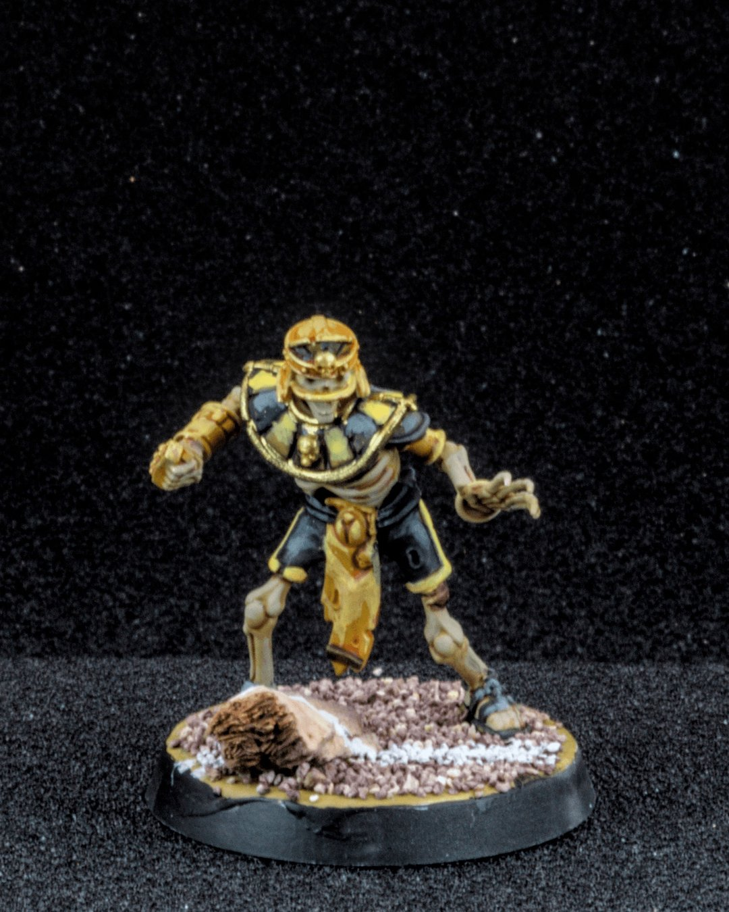
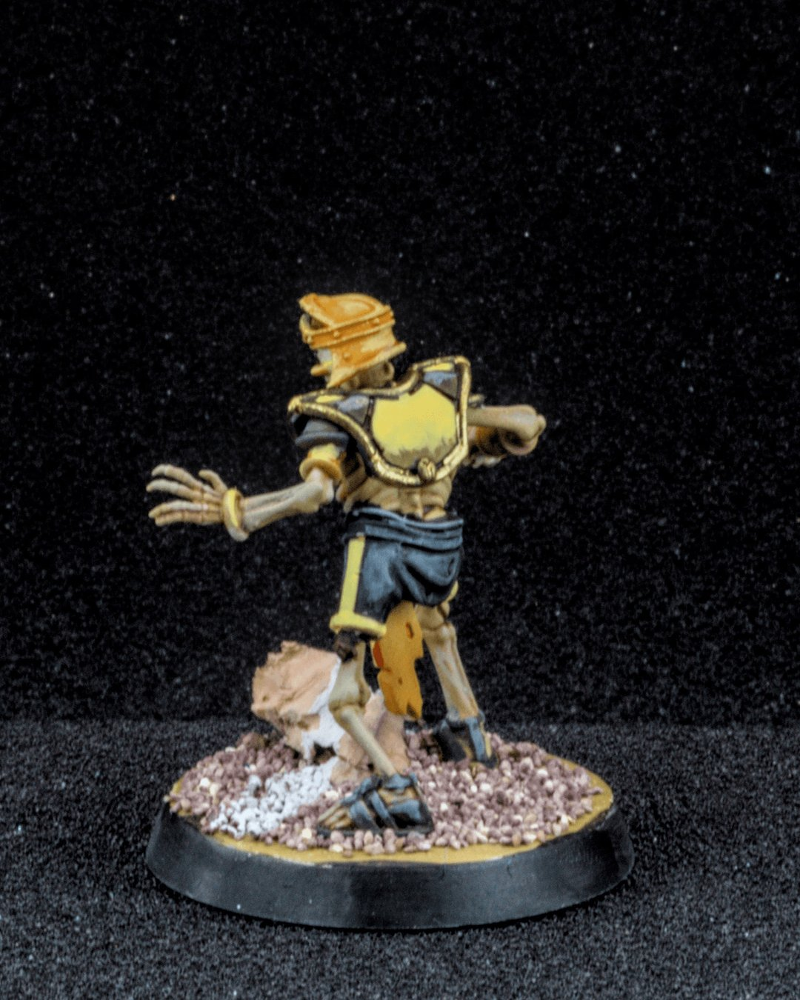
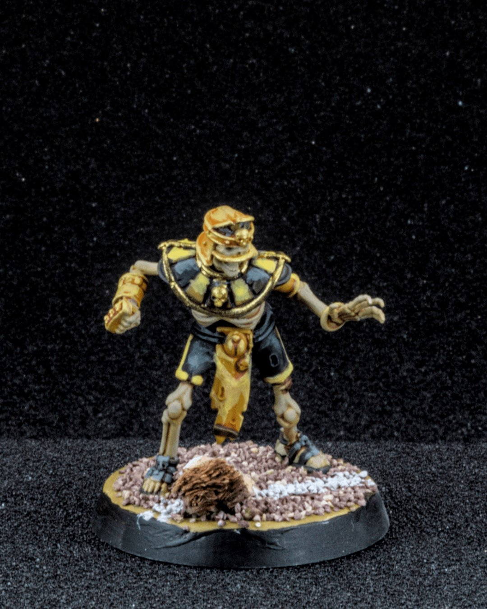
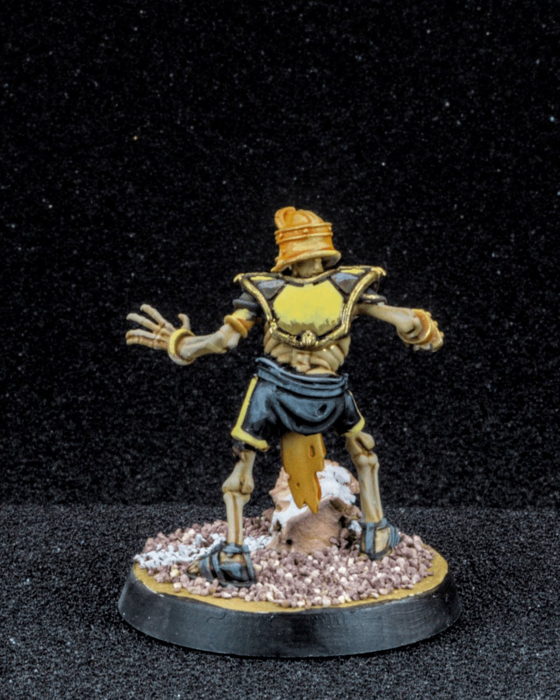
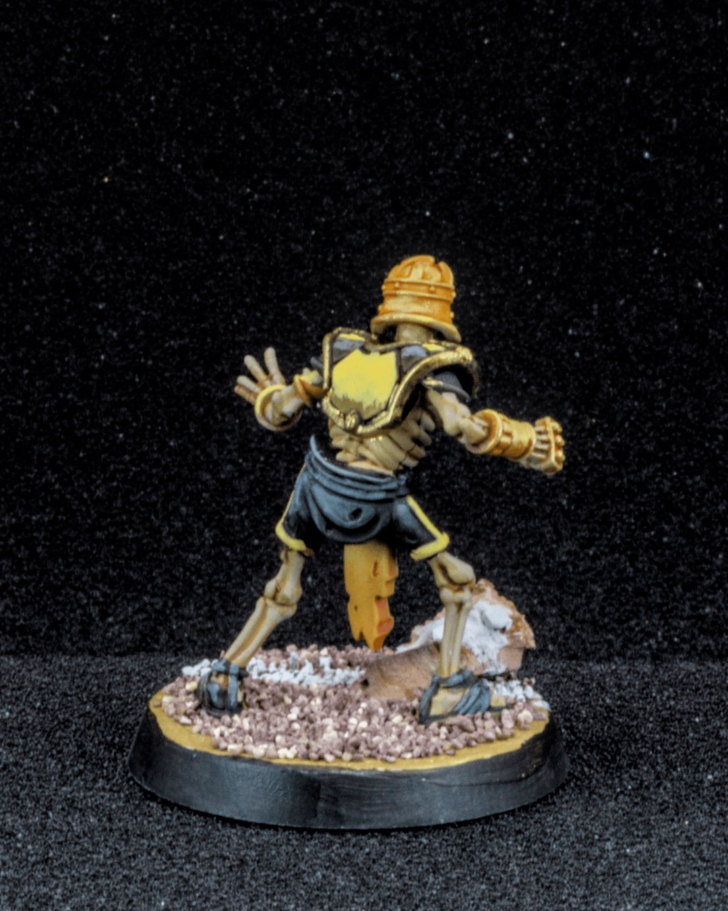
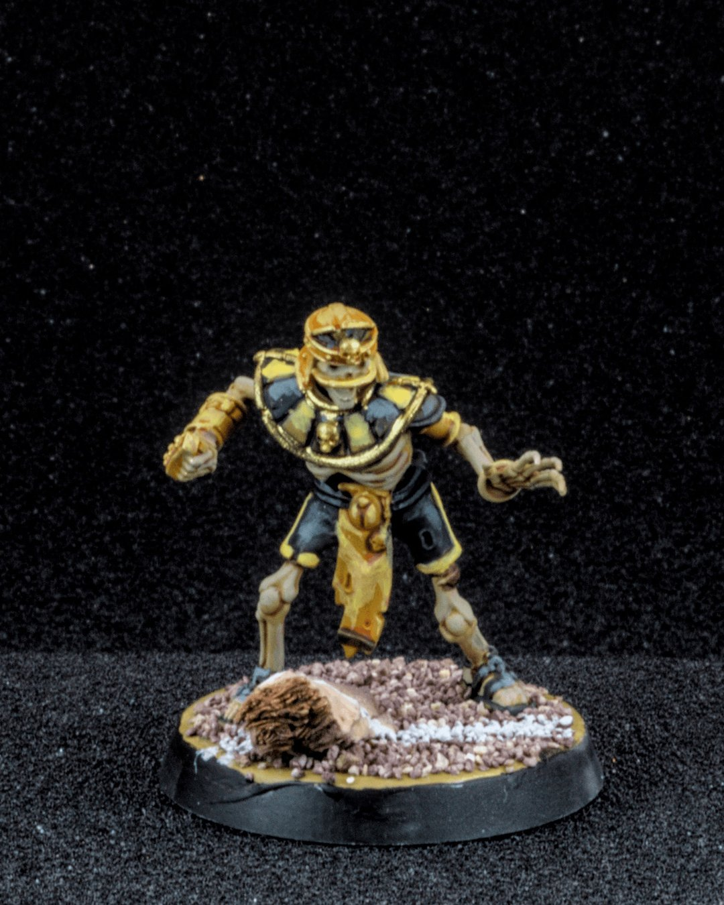

Tomb Kings Linemen
The Tomb Kings don’t win games with flash… they win them in the trenches. 💀
Lineman aren’t the stars on the roster. No fancy skills, no highlight-reel plays, no dramatic ball carries into the end zone. But they’re the ones tying up your blitzers, clogging the lanes, and quietly ruining your carefully crafted strategy one block at a time. Ignore them, and suddenly your “perfect” turn unravels.
For these skeletal workhorses, I kept the palette classic, sun-bleached bone with warm sepia shadows and layered ivory highlights so they stay readable on the pitch. The black and yellow panels are a little nod to the Steelers “bumblebee” throwbacks, because even ancient undead deserve questionable fashion choices. 🐝 The gold got sharper edge highlights to pop against the darker cloth, and I leaned into that dry, desert base.
I also loved the idea that the Tomb Kings didn’t even bother clearing the field. Logs, rocks, whatever was there… they just painted the lines right over it. Priorities. 🏈💀
Solid fundamentals. No glory. Just bones doing the dirty work.
#BloodBowl #MiniaturePainting #Warhammer #TabletopGaming #FantasyFootball